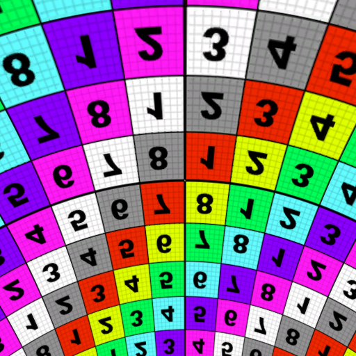
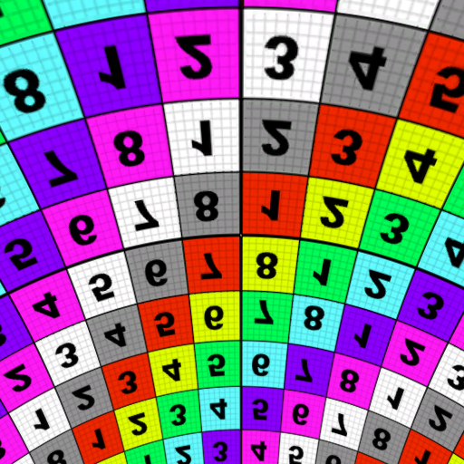

Extending The Unity Procedural Skybox
Skyboxes can be a great way to add a sense of place to a game, and a procedural one can be a great way to create lots of different environments by just adjusting some material properties. However, they can be a little complicated to get right.
I have messed around with a lot of different techniques for making procedural skyboxes but I think I have landed on what is my favorite of all the versions I have made. In this post I will show you how to create a great skybox that has a lot of cool customizable features, like the one below.

An example of what you can do with procedural skyboxes
Part 1: Background on Skies
Skies in the real world have a lot of aspects to them that we can think of and try to replicate. For example, the color of the sky, the desaturation of that color as you look to the horizon, sunsets. It is not too difficult to come up with some math and slap it into a shader to replicate these aspects of a sky. However, in my experience they often work best when you know exactly what you want and can work backwards to figure out how you can fake that inside of a shader. Which in a lot of cases is fine but I think we can do better, and a lot of people have.
The way skies look is due to what is known as light scattering. As light passes through the atmosphere it gets redirected in all sorts of directions by small particles floating in the air. This refracts different wave lengths of light in different directions and is why the sky is blue, blue light gets refracted towards your eye while other colors are refracted away from your eye. And as it turns out the math behind how this work is incredibly complicated. For real time graphics, trying to implement this exactly is practically impossible. However, if we can approximate it, we can get the result we want at an acceptable computational cost. As it turns out people have been working on this for a while and the folks at NVIDIA have come up with a great method you can read about here, which I recommend reading.

With good light scattering you can simulate awesome aspects of the sky like a sunset.
Anyway, there is no reason to reinvent the wheel here. The work has already been done to approximate this effect and Unity has a shader that uses this approximation to create a realistic looking sky like the one you can see above. I am not going to explain how this works, if you read the NVIDIA article and compare it to Unity’s shader you will be able to connect the dots. What we are going to do is extend this shader to add cool things like clouds, stars, and a textured moon object.
Part 2: The Setup
So, to get started head over to the Unity archive find the version of Unity you are using, click on the drop-down menu and download the built-in shaders. I am using 2019.4 at the moment, but it probably isn’t super important. Besides using the skybox shader, this is a great resource to explore some code and learn how shaders work, so I recommend having a copy of this available at any time.
Once you have downloaded the files create a new Unity project, create a shader and material folder. In the shader folder add another folder and call it Includes
.
Spelling here is important so make sure you name it correctly, or name it whatever you want and make the appropriate changes as we go.
In the shader folder create a new Unlit shader, name it whatever you want, and open it up. Go ahead and delete everything in the property block, the fog multi-compile line,
everything from the appdata and v2f structs, all declared variables, and everything out of the vert and frag functions.
Shader "Feral_Pug/SkyBox/MyProceduralSkybox"
{
Properties
{
}
SubShader
{
Tags { "RenderType"="Opaque" }
LOD 100
Pass
{
CGPROGRAM
#pragma vertex vert
#pragma fragment frag
#include "UnityCG.cginc"
struct appdata
{
};
struct v2f
{
};
v2f vert (appdata v)
{
}
fixed4 frag (v2f i) : SV_Target
{
}
ENDCG
}
}
}
A gutted shader with the general setup that we will use to build our shader with.
Now go to the file you downloaded and look in the DefaultResourcesExtra folder for the Skybox-Procedural.shader file and open it. We are going to take a lot of this
code and put it in a separate include file so that our shader doesn’t get cluttered. Because Unity doesn’t have a way to do this in the editor, go to the
Includes folder you created outside of Unity and add a text file to that folder and name it Scattering
. Then right click it, go to properties, and change the
.txt
file extension to .cginc
. Go to Unity and open the Scattering.cginc
include file.
First thing we are going to do is add a define check to make sure we don’t ever include this file twice. Add the following to the top of the empty include file. This is something you should always do when using include files as including them multiple times will cause redefinition compiler errors.
#ifndef SCATTERING
#define SCATTERING
#endif
A simple way to guard against including a file twice, which will cause an error.
Everything we add to this will go in between the #define SCATTERING and the #endif lines. First, we will grab everything
from the #if defined(UNITY_COLORSPACE_GAMMA) line to the end of the getRayleighPhase method declaration.
#ifndef SCATTERING
#define SCATTERING
#if defined(UNITY_COLORSPACE_GAMMA)
#define GAMMA 2
#define COLOR_2_GAMMA(color) color
#define COLOR_2_LINEAR(color) color*color
#define LINEAR_2_OUTPUT(color) sqrt(color)
#else
#define GAMMA 2.2
// HACK: to get gfx-tests in Gamma mode to agree until UNITY_ACTIVE_COLORSPACE_IS_GAMMA is working properly
#define COLOR_2_GAMMA(color) ((unity_ColorSpaceDouble.r>2.0) ? pow(color,1.0/GAMMA) : color)
#define COLOR_2_LINEAR(color) color
#define LINEAR_2_LINEAR(color) color
#endif
// RGB wavelengths
// .35 (.62=158), .43 (.68=174), .525 (.75=190)
static const float3 kDefaultScatteringWavelength = float3(.65, .57, .475);
static const float3 kVariableRangeForScatteringWavelength = float3(.15, .15, .15);
#define OUTER_RADIUS 1.025
static const float kOuterRadius = OUTER_RADIUS;
static const float kOuterRadius2 = OUTER_RADIUS * OUTER_RADIUS;
static const float kInnerRadius = 1.0;
static const float kInnerRadius2 = 1.0;
static const float kCameraHeight = 0.0001;
#define kRAYLEIGH (lerp(0.0, 0.0025, pow(_AtmosphereThickness,2.5))) // Rayleigh constant
#define kMIE 0.0010 // Mie constant
#define kSUN_BRIGHTNESS 20.0 // Sun brightness
#define kMAX_SCATTER 50.0 // Maximum scattering value, to prevent math overflows on Adrenos
static const half kHDSundiskIntensityFactor = 15.0;
static const half kSimpleSundiskIntensityFactor = 27.0;
static const half kSunScale = 400.0 * kSUN_BRIGHTNESS;
static const float kKmESun = kMIE * kSUN_BRIGHTNESS;
static const float kKm4PI = kMIE * 4.0 * 3.14159265;
static const float kScale = 1.0 / (OUTER_RADIUS - 1.0);
static const float kScaleDepth = 0.25;
static const float kScaleOverScaleDepth = (1.0 / (OUTER_RADIUS - 1.0)) / 0.25;
static const float kSamples = 2.0; // THIS IS UNROLLED MANUALLY, DON'T TOUCH
#define MIE_G (-0.990)
#define MIE_G2 0.9801
#define SKY_GROUND_THRESHOLD 0.02
// fine tuning of performance. You can override defines here if you want some specific setup
// or keep as is and allow later code to set it according to target api
// if set vprog will output color in final color space (instead of linear always)
// in case of rendering in gamma mode that means that we will do lerps in gamma mode too, so there will be tiny difference around horizon
// #define SKYBOX_COLOR_IN_TARGET_COLOR_SPACE 0
// sun disk rendering:
// no sun disk - the fastest option
#define SKYBOX_SUNDISK_NONE 0
// simplistic sun disk - without mie phase function
#define SKYBOX_SUNDISK_SIMPLE 1
// full calculation - uses mie phase function
#define SKYBOX_SUNDISK_HQ 2
// uncomment this line and change SKYBOX_SUNDISK_SIMPLE to override material settings
// #define SKYBOX_SUNDISK SKYBOX_SUNDISK_SIMPLE
#ifndef SKYBOX_SUNDISK
#if defined(_SUNDISK_NONE)
#define SKYBOX_SUNDISK SKYBOX_SUNDISK_NONE
#elif defined(_SUNDISK_SIMPLE)
#define SKYBOX_SUNDISK SKYBOX_SUNDISK_SIMPLE
#else
#define SKYBOX_SUNDISK SKYBOX_SUNDISK_HQ
#endif
#endif
#ifndef SKYBOX_COLOR_IN_TARGET_COLOR_SPACE
#if defined(SHADER_API_MOBILE)
#define SKYBOX_COLOR_IN_TARGET_COLOR_SPACE 1
#else
#define SKYBOX_COLOR_IN_TARGET_COLOR_SPACE 0
#endif
#endif
// Calculates the Rayleigh phase function
half getRayleighPhase(half eyeCos2)
{
return 0.75 + 0.75 * eyeCos2;
}
half getRayleighPhase(half3 light, half3 ray)
{
half eyeCos = dot(light, ray);
return getRayleighPhase(eyeCos * eyeCos);
}
#endif
Everything in between our #define SCATTERING
and #endif
has been stripped out of the Unity procedural skybox shader and added to our
include file. Your include file should look just like this. We have just a few more things to rip out and one or two changes to the code.
We still have to rip out the scale function just above the vert method declaration, the getMiePhase method,
and the calcSunAttenuation method that are just above the frag function. Add those now to the bottom of our include file.
float scale(float inCos)
{
float x = 1.0 - inCos;
return 0.25 * exp(-0.00287 + x * (0.459 + x * (3.83 + x * (-6.80 + x * 5.25))));
}
// Calculates the Mie phase function
half getMiePhase(half eyeCos, half eyeCos2)
{
half temp = 1.0 + MIE_G2 - 2.0 * MIE_G * eyeCos;
temp = pow(temp, pow(_SunSize, 0.65) * 10);
temp = max(temp, 1.0e-4); // prevent division by zero, esp. in half precision
temp = 1.5 * ((1.0 - MIE_G2) / (2.0 + MIE_G2)) * (1.0 + eyeCos2) / temp;
#if defined(UNITY_COLORSPACE_GAMMA) && SKYBOX_COLOR_IN_TARGET_COLOR_SPACE
temp = pow(temp, .454545);
#endif
return temp;
}
// Calculates the sun shape
half calcSunAttenuation(half3 lightPos, half3 ray)
{
#if SKYBOX_SUNDISK == SKYBOX_SUNDISK_SIMPLE
half3 delta = lightPos - ray;
half dist = length(delta);
half spot = 1.0 - smoothstep(0.0, _SunSize, dist);
return spot * spot;
#else // SKYBOX_SUNDISK_HQ
half focusedEyeCos = pow(saturate(dot(lightPos, ray)), _SunSizeConvergence);
return getMiePhase(-focusedEyeCos, focusedEyeCos * focusedEyeCos);
#endif
}
Almost finished with setting up the include file. It seems like a lot of work, but it will be much nicer to work with our shader once this is all out of the way.
All we have left to do is change a few of the methods. Some of the methods reference properties on our shader. While this is not really a problem, your IDE, like Visual Studio, will keep complaining about it and I find it very annoying. All we have to do is replace these with parameters we will add to these functions and then remember to add those parameters to where they are used in the shader.
float scale(float inCos)
{
float x = 1.0 - inCos;
return 0.25 * exp(-0.00287 + x * (0.459 + x * (3.83 + x * (-6.80 + x * 5.25))));
}
// Calculates the Mie phase function
half getMiePhase(half eyeCos, half eyeCos2, float SunSize)
{
half temp = 1.0 + MIE_G2 - 2.0 * MIE_G * eyeCos;
temp = pow(temp, pow(SunSize, 0.65) * 10);
temp = max(temp, 1.0e-4); // prevent division by zero, esp. in half precision
temp = 1.5 * ((1.0 - MIE_G2) / (2.0 + MIE_G2)) * (1.0 + eyeCos2) / temp;
#if defined(UNITY_COLORSPACE_GAMMA) && SKYBOX_COLOR_IN_TARGET_COLOR_SPACE
temp = pow(temp, .454545);
#endif
return temp;
}
// Calculates the sun shape
half calcSunAttenuation(half3 lightPos, half3 ray, float SunSize, float SunSizeConvergence)
{
#if SKYBOX_SUNDISK == SKYBOX_SUNDISK_SIMPLE
half3 delta = lightPos - ray;
half dist = length(delta);
half spot = 1.0 - smoothstep(0.0, SunSize, dist);
return spot * spot;
#else // SKYBOX_SUNDISK_HQ
half focusedEyeCos = pow(saturate(dot(lightPos, ray)), SunSizeConvergence);
return getMiePhase(-focusedEyeCos, focusedEyeCos * focusedEyeCos, SunSize);
#endif
}
And we are done. We have just made the highlighted changes to our include file. You can close this and never look at it again.
Now the last thing we have to recreate the Unity procedural skybox and get to extending it is to change the rendering mode, queue and preview, set Cull and Zwrite to off add all the properties, include files, pragma statements, property variable declarations, vert and fragment data structures, and the vert and frag programs themselves.
First, we change the rendering queue and type to Background
. This is to tell the shader to render this last. In Unity when opaque objects are drawn to the render target of
the camera they draw into the stencil buffer. What this does is it tells Unity where stuff has been rendered or conversely where stuff has not been rendered. It
then knows that it should draw the skybox in only those parts of the screen. The preview tag just changes how its preview looks in the inspector. We do not want
cull any part of skybox, although I assume it would not make a difference, and we do not want to write to the Zbuffer, which could mess up post processing I suppose,
if we were doing any. We also need to include our Scattering.cginc
file as that is where all the functions now live and we also have to add the _SunSize
and _SunSizeConvergence
to the parameters list for the calcSunAttenuation
method call in the frag function.
We also need to include our Scattering.cginc
file as that is where all the functions now live and we also have to add the _SunSize
and _SunSizeConvergence
to the parameters list for the calcSunAttenuation
method call in the frag function.
Shader "Feral_Pug/SkyBox/MyProceduralSkybox"
{
Properties
{
[KeywordEnum(None, Simple, High Quality)] _SunDisk ("Sun", Int) = 2
_SunSize ("Sun Size", Range(0,1)) = 0.04
_SunSizeConvergence("Sun Size Convergence", Range(1,10)) = 5
_AtmosphereThickness ("Atmosphere Thickness", Range(0,5)) = 1.0
_SkyTint ("Sky Tint", Color) = (.5, .5, .5, 1)
_GroundColor ("Ground", Color) = (.369, .349, .341, 1)
_Exposure("Exposure", Range(0, 8)) = 1.3
}
SubShader
{
Tags { "Queue"="Background" "RenderType"="Background" "PreviewType"="Skybox" }
Cull Off ZWrite Off
Pass
{
CGPROGRAM
#pragma vertex vert
#pragma fragment frag
#include "UnityCG.cginc"
#include "Lighting.cginc"
#include "Includes/Scattering.cginc"
#pragma multi_compile_local _SUNDISK_NONE _SUNDISK_SIMPLE _SUNDISK_HIGH_QUALITY
uniform half _Exposure; // HDR exposure
uniform half3 _GroundColor;
uniform half _SunSize;
uniform half _SunSizeConvergence;
uniform half3 _SkyTint;
uniform half _AtmosphereThickness;
struct appdata
{
float4 vertex : POSITION;
UNITY_VERTEX_INPUT_INSTANCE_ID
};
struct v2f
{
float4 pos : SV_POSITION;
#if SKYBOX_SUNDISK == SKYBOX_SUNDISK_HQ
// for HQ sun disk, we need vertex itself to calculate ray-dir per-pixel
float3 vertex : TEXCOORD0;
#elif SKYBOX_SUNDISK == SKYBOX_SUNDISK_SIMPLE
half3 rayDir : TEXCOORD0;
#else
// as we dont need sun disk we need just rayDir.y (sky/ground threshold)
half skyGroundFactor : TEXCOORD0;
#endif
// calculate sky colors in vprog
half3 groundColor : TEXCOORD1;
half3 skyColor : TEXCOORD2;
#if SKYBOX_SUNDISK != SKYBOX_SUNDISK_NONE
half3 sunColor : TEXCOORD3;
#endif
UNITY_VERTEX_OUTPUT_STEREO
};
v2f vert (appdata v)
{
v2f OUT;
UNITY_SETUP_INSTANCE_ID(v);
UNITY_INITIALIZE_VERTEX_OUTPUT_STEREO(OUT);
OUT.pos = UnityObjectToClipPos(v.vertex);
float3 kSkyTintInGammaSpace = COLOR_2_GAMMA(_SkyTint); // convert tint from Linear back to Gamma
float3 kScatteringWavelength = lerp (
kDefaultScatteringWavelength-kVariableRangeForScatteringWavelength,
kDefaultScatteringWavelength+kVariableRangeForScatteringWavelength,
half3(1,1,1) - kSkyTintInGammaSpace); // using Tint in sRGB gamma allows for more visually linear interpolation and to keep (.5) at (128, gray in sRGB) point
float3 kInvWavelength = 1.0 / pow(kScatteringWavelength, 4);
float kKrESun = kRAYLEIGH * kSUN_BRIGHTNESS;
float kKr4PI = kRAYLEIGH * 4.0 * 3.14159265;
float3 cameraPos = float3(0,kInnerRadius + kCameraHeight,0); // The camera's current position
// Get the ray from the camera to the vertex and its length (which is the far point of the ray passing through the atmosphere)
float3 eyeRay = normalize(mul((float3x3)unity_ObjectToWorld, v.vertex.xyz));
float far = 0.0;
half3 cIn, cOut;
if(eyeRay.y >= 0.0)
{
// Sky
// Calculate the length of the "atmosphere"
far = sqrt(kOuterRadius2 + kInnerRadius2 * eyeRay.y * eyeRay.y - kInnerRadius2) - kInnerRadius * eyeRay.y;
float3 pos = cameraPos + far * eyeRay;
// Calculate the ray's starting position, then calculate its scattering offset
float height = kInnerRadius + kCameraHeight;
float depth = exp(kScaleOverScaleDepth * (-kCameraHeight));
float startAngle = dot(eyeRay, cameraPos) / height;
float startOffset = depth*scale(startAngle);
// Initialize the scattering loop variables
float sampleLength = far / kSamples;
float scaledLength = sampleLength * kScale;
float3 sampleRay = eyeRay * sampleLength;
float3 samplePoint = cameraPos + sampleRay * 0.5;
// Now loop through the sample rays
float3 frontColor = float3(0.0, 0.0, 0.0);
// Weird workaround: WP8 and desktop FL_9_3 do not like the for loop here
// (but an almost identical loop is perfectly fine in the ground calculations below)
// Just unrolling this manually seems to make everything fine again.
// for(int i=0; i<int(kSamples); i++)
{
float height=length(samplePoint);
float depth=exp(kScaleOverScaleDepth * (kInnerRadius - height));
float lightAngle=dot(_WorldSpaceLightPos0.xyz, samplePoint) / height;
float cameraAngle=dot(eyeRay, samplePoint) / height;
float scatter=(startOffset + depth*(scale(lightAngle) - scale(cameraAngle)));
float3 attenuate=exp(-clamp(scatter, 0.0, kMAX_SCATTER) * (kInvWavelength * kKr4PI + kKm4PI));
frontColor +=attenuate * (depth * scaledLength);
>samplePoint +=sampleRay;
}
{
float height=length(samplePoint);
float depth=exp(kScaleOverScaleDepth * (kInnerRadius - height));
float lightAngle=dot(_WorldSpaceLightPos0.xyz, samplePoint) / height;
float cameraAngle=dot(eyeRay, samplePoint) / height;
float scatter=(startOffset + depth*(scale(lightAngle) - scale(cameraAngle)));
float3 attenuate=exp(-clamp(scatter, 0.0, kMAX_SCATTER) * (kInvWavelength * kKr4PI + kKm4PI));
frontColor +=attenuate * (depth * scaledLength);
samplePoint +=sampleRay;
}
// Finally, scale the Mie and Rayleigh colors and set up the varying variables for the pixel shader
cIn=frontColor * (kInvWavelength * kKrESun);
cOut=frontColor * kKmESun;
}
else
{
// Ground
far=(-kCameraHeight) / (min(-0.001, eyeRay.y));
float3 pos=cameraPos + far * eyeRay;
// Calculate the ray's starting position, then calculate its scattering offset
float depth=exp((-kCameraHeight) * (1.0 /kScaleDepth));
float cameraAngle=dot(-eyeRay, pos);
float lightAngle=dot(_WorldSpaceLightPos0.xyz, pos);
float cameraScale=scale(cameraAngle);
float lightScale=scale(lightAngle);
float cameraOffset=depth*cameraScale;
float temp=(lightScale + cameraScale);
// Initialize the scattering loop variables
float sampleLength=far / kSamples;
float scaledLength=sampleLength * kScale;
float3 sampleRay=eyeRay * sampleLength;
float3 samplePoint=cameraPos + sampleRay * 0.5;
// Now loop through the sample rays
float3 frontColor=float3(0.0, 0.0, 0.0);
float3 attenuate;
// for(int i=0; i<int(kSamples); i++) // Loop removed because we kept hitting SM2.0 temp variable limits. Doesn't affect the image too much.
{
float height = length(samplePoint);
float depth = exp(kScaleOverScaleDepth * (kInnerRadius - height));
float scatter = depth*temp - cameraOffset;
attenuate = exp(-clamp(scatter, 0.0, kMAX_SCATTER) * (kInvWavelength * kKr4PI + kKm4PI));
frontColor += attenuate * (depth * scaledLength)
samplePoint += sampleRay;
}
cIn = frontColor * (kInvWavelength * kKrESun + kKmESun);
cOut = clamp(attenuate, 0.0, 1.0);
}
#if SKYBOX_SUNDISK == SKYBOX_SUNDISK_HQ
OUT.vertex = -eyeRay;
#elif SKYBOX_SUNDISK == SKYBOX_SUNDISK_SIMPLE
OUT.rayDir = half3(-eyeRay);
#else
OUT.skyGroundFactor = -eyeRay.y / SKY_GROUND_THRESHOLD;
#endif
// if we want to calculate color in vprog:
// 1. in case of linear: multiply by _Exposure in here (even in case of lerp it will be common multiplier, so we can skip mul in fshader)
// 2. in case of gamma and SKYBOX_COLOR_IN_TARGET_COLOR_SPACE: do sqrt right away instead of doing that in fshader
OUT.groundColor = _Exposure * (cIn + COLOR_2_LINEAR(_GroundColor) * cOut);
OUT.skyColor = _Exposure * (cIn * getRayleighPhase(_WorldSpaceLightPos0.xyz, -eyeRay));
#if SKYBOX_SUNDISK != SKYBOX_SUNDISK_NONE
// The sun should have a stable intensity in its course in the sky. Moreover it should match the highlight of a purely specular material.
// This matching was done using the standard shader BRDF1 on the 5/31/2017
// Finally we want the sun to be always bright even in LDR thus the normalization of the lightColor for low intensity.
half lightColorIntensity = clamp(length(_LightColor0.xyz), 0.25, 1);
#if SKYBOX_SUNDISK == SKYBOX_SUNDISK_SIMPLE
OUT.sunColor = kSimpleSundiskIntensityFactor * saturate(cOut * kSunScale) * _LightColor0.xyz / lightColorIntensity;
#else // SKYBOX_SUNDISK_HQ
OUT.sunColor = kHDSundiskIntensityFactor * saturate(cOut) * _LightColor0.xyz / lightColorIntensity;
#endif
#endif
#if defined(UNITY_COLORSPACE_GAMMA) && SKYBOX_COLOR_IN_TARGET_COLOR_SPACE
OUT.groundColor = sqrt(OUT.groundColor);
OUT.skyColor = sqrt(OUT.skyColor);
#if SKYBOX_SUNDISK != SKYBOX_SUNDISK_NONE
OUT.sunColor= sqrt(OUT.sunColor);
#endif
#endif
return OUT;
}
fixed4 frag (v2f IN) : SV_Target
{
half3 col = half3(0.0, 0.0, 0.0);
// if y > 1 [eyeRay.y < -SKY_GROUND_THRESHOLD] - ground
// if y >= 0 and < 1 [eyeRay.y <= 0 and > -SKY_GROUND_THRESHOLD] - horizon
// if y < 0 [eyeRay.y > 0] - sky
#if SKYBOX_SUNDISK == SKYBOX_SUNDISK_HQ
half3 ray = normalize(IN.vertex.xyz);
half y = ray.y / SKY_GROUND_THRESHOLD;
#elif SKYBOX_SUNDISK == SKYBOX_SUNDISK_SIMPLE
half3 ray = IN.rayDir.xyz;
half y = ray.y / SKY_GROUND_THRESHOLD;
#else
half y = IN.skyGroundFactor;
#endif
// if we did precalculate color in vprog: just do lerp between them
col = lerp(IN.skyColor, IN.groundColor, saturate(y));
#if SKYBOX_SUNDISK != SKYBOX_SUNDISK_NONE
if(y < 0.0)
{
col += IN.sunColor * calcSunAttenuation(_WorldSpaceLightPos0.xyz, -ray, _SunSize, _SunSizeConvergence);
}
#endif
#if defined(UNITY_COLORSPACE_GAMMA) && !SKYBOX_COLOR_IN_TARGET_COLOR_SPACE
col = LINEAR_2_OUTPUT(col);
#endif
return half4(col,1.0);
}
ENDCG
}
}
}
Now we have a cleaned-up version of the Unity procedural skybox shader and we can finally start to get to work. Do not forget to add those parameters
to the calcSunAttenuation
call in the frag function.
OK, now we are finished with setting up our shader. I know that was a lot so if you want you can just grab the completed version of this step from my
GitHub here.
Just remember the include file has to go into a folder named Includes
in the same directory as the shader
or you will have to change the file path on the include statement for our Scattering.cginc
.
Part 3: Adding Stars
The first thing we will add is stars. This is relatively simple, so it seems like a good place to start. To get stars we will use a Voronoi texture. You can easily make one yourself in whatever software you like, I use GIMP, or you can use the one I made by going to my GitHub here. In GIMP all you have to do is create a new image and go to Filters > Render > Noise > Cell Noise. Play around with the settings until you have one you like. Then when you are done go back to Filters and find Map > Tile Seamless. Keep the opacity at 100 and hit OK. Export it as you like, and you are all set to go. When you are done import it into Unity.
This is the Voronoi Texture that I used.
To be able to use this texture we have to come up with a way to get UVs to sample the texture with in our shader. To do this we will get the world space position of the current pixel we are working on, normalize it, and use that direction generate UV coordinates. I have seen lots of examples of turning this direction into spherical coordinates using some triginometry, which we will do when we make our moon, but this makes for bad samples around the poles. A better way, and a lot simpler, is to just divide the and X and Z coordinates of our direction by the Y of our direction. This essentially projects our direction on to a plane that sits directly on top of the sphere we are calling our skybox, and is orientated facing up. And we can take this one step further. By adding a number between 0 and 1 to the to Y coordinate before the division we can make this plane curve in a way that gives us control over how the stars are in the sky.
To do that we will add a bending amount property along with a texture property and declare those variables. While we are at it we will clean up the
property block a bit. Next we will have to change our v2f
struct a bit so we can pass the world position from the vertex shader to the fragment shader.
Then in the fragment shader we can get the direction, do the division, and finally sample the texture. For now we will just use a test texture to see it in action.
You can get that here.
Properties
{
[Header(SkyAndSun)]
[KeywordEnum(None, Simple, High Quality)] _SunDisk ("Sun", Int) = 2
_SunSize ("Sun Size", Range(0,1)) = 0.04
_SunSizeConvergence("Sun Size Convergence", Range(1,10)) = 5
_AtmosphereThickness ("Atmosphere Thickness", Range(0,5)) = 1.0
_SkyTint ("Sky Tint", Color) = (.5, .5, .5, 1)
_GroundColor ("Ground", Color) = (.369, .349, .341, 1)
_Exposure("Exposure", Range(0, 8)) = 1.3
[Header (Stars)]
_StarTex("Star Tex", 2D) = "black" {}
_StarBending("Star Bending", Range(0, 1)) = 1
}
...
uniform half _Exposure; // HDR exposure
uniform half3 _GroundColor;
uniform half _SunSize;
uniform half _SunSizeConvergence;
uniform half3 _SkyTint;
uniform half _AtmosphereThickness;
uniform sampler2D _StarTex;
uniform float4 _StarTex_ST;
uniform float _StarBending;
struct appdata
{
float4 vertex : POSITION;
UNITY_VERTEX_INPUT_INSTANCE_ID
};
struct v2f
{
float4 pos : SV_POSITION;
float3 worldPos : TEXCOORD0;
#if SKYBOX_SUNDISK == SKYBOX_SUNDISK_HQ
// for HQ sun disk, we need vertex itself to calculate ray-dir per-pixel
float3 vertex : TEXCOORD1;
#elif SKYBOX_SUNDISK == SKYBOX_SUNDISK_SIMPLE
half3 rayDir : TEXCOORD1;
#else
// as we dont need sun disk we need just rayDir.y (sky/ground threshold)
half skyGroundFactor : TEXCOORD1;
#endif
// calculate sky colors in vprog
half3 groundColor : TEXCOORD2;
half3 skyColor : TEXCOORD3;
#if SKYBOX_SUNDISK != SKYBOX_SUNDISK_NONE
half3 sunColor : TEXCOORD4;
#endif
UNITY_VERTEX_OUTPUT_STEREO
};
v2f vert (appdata v)
{
v2f OUT;
UNITY_SETUP_INSTANCE_ID(v);
UNITY_INITIALIZE_VERTEX_OUTPUT_STEREO(OUT);
OUT.pos = UnityObjectToClipPos(v.vertex);
OUT.worldPos = mul(unity_ObjectToWorld, v.vertex);
float3 kSkyTintInGammaSpace = COLOR_2_GAMMA(_SkyTint); // convert tint from Linear back to Gamma
float3 kScatteringWavelength = lerp (
...
fixed4 frag (v2f IN) : SV_Target
{
//first off we declare some values and set up some stuff that will get used a lot in the shader
float4 col = float4(0, 0, 0, 0);
//first off we have to make our positions fit a sphere
float3 normWorldPos = normalize(IN.worldPos);
//Start of Unity code
// if y > 1 [eyeRay.y < -SKY_GROUND_THRESHOLD] - ground
// if y >= 0 and < 1 [eyeRay.y <= 0 and > -SKY_GROUND_THRESHOLD] - horizon
// if y < 0 [eyeRay.y > 0] - sky
#if SKYBOX_SUNDISK == SKYBOX_SUNDISK_HQ
half3 ray = normalize(IN.vertex.xyz);
half y = ray.y / SKY_GROUND_THRESHOLD;
#elif SKYBOX_SUNDISK == SKYBOX_SUNDISK_SIMPLE
half3 ray = IN.rayDir.xyz;
half y = ray.y / SKY_GROUND_THRESHOLD;
#else
half y = IN.skyGroundFactor;
#endif
// if we did precalculate color in vprog: just do lerp between them
col.rgb = lerp(IN.skyColor, IN.groundColor, saturate(y));
#if SKYBOX_SUNDISK != SKYBOX_SUNDISK_NONE
if(y < 0.0)
{
col.rgb += IN.sunColor * calcSunAttenuation(_WorldSpaceLightPos0.xyz, -ray, _SunSize, _SunSizeConvergence);
}
#endif
#if defined(UNITY_COLORSPACE_GAMMA) && !SKYBOX_COLOR_IN_TARGET_COLOR_SPACE
col.rgb = LINEAR_2_OUTPUT(col);
#endif
//End of Unity Code
//Stars
float2 starsUV = normWorldPos.xz / (normWorldPos.y + _StarBending);
col.rgb = tex2D(_StarTex, starsUV * _StarTex_ST.xy + _StarTex_ST.zw).rgb;
return col;
}
 

On the left _StarsBending is set to 0 and on the right _StarsBending is set to 1
Now to get the actual stars we will switch to using our Voronoi texture and take the value at our texture sample, invert it with a 1 - value
and then raise it to a power to get tight little dots in the sky. While we are at it let also add some new properties to control where the horizon
starts to mask out all of the features we are going to add because we dont want to be able to see them under the horizon anyway. To do that we take the
dot product of our world direction and an up vector, remap that value so that at our user set values it goes from 0 to 1 and then invert the value so 1 is
on top and zero is at the bottom. We can then use the 0 to 1 value to lerp between the background color and our added features. Once done play with the values
a bit to get what you like.
Properties
{
[Header(SkyAndSun)]
[KeywordEnum(None, Simple, High Quality)] _SunDisk ("Sun", Int) = 2
_SunSize ("Sun Size", Range(0,1)) = 0.04
_SunSizeConvergence("Sun Size Convergence", Range(1,10)) = 5
_AtmosphereThickness ("Atmosphere Thickness", Range(0,5)) = 1.0
_SkyTint ("Sky Tint", Color) = (.5, .5, .5, 1)
_GroundColor ("Ground", Color) = (.369, .349, .341, 1)
_Exposure("Exposure", Range(0, 8)) = 1.3
_SkyFadeStart("Sky Fade Start", Range(-1, 1)) = .05
_SkyFadeEnd("Sky End Start", Range(-1, 1)) = -.05
[Header (Stars)]
_StarTex("Star Tex", 2D) = "black" {}
_StarBending("Star Bending", Range(0, 1)) = 1
_StarBrightness("Star Brightness", Range(0, 100)) = 8.5
}
...
uniform half _Exposure; // HDR exposure
uniform half3 _GroundColor;
uniform half _SunSize;
uniform half _SunSizeConvergence;
uniform half3 _SkyTint;
uniform half _AtmosphereThickness;
uniform half _SkyFadeStart, _SkyFadeEnd;
uniform sampler2D _StarTex;
uniform float4 _StarTex_ST;
uniform float _StarBending, _StarBrightness;
...
float Remap(float In, float2 InMinMax, float2 OutMinMax)
{
return OutMinMax.x + (In - InMinMax.x) * (OutMinMax.y - OutMinMax.x) / (InMinMax.y - InMinMax.x);
}
fixed4 frag (v2f IN) : SV_Target
{
//first off we declare some values and set up some stuff that will get used a lot in the shader
float4 col = float4(0, 0, 0, 0);
//first off we have to make our positions fit a sphere
float3 normWorldPos = normalize(IN.worldPos);
//this sets up where things will start to fade out along the horizon. The values allow us to give it some range so it fades out
//we have to do 1 minus because the start fade value is actauly higher then the end. You could do the dot with down but I like this better
float horizonValue = dot(normWorldPos, float3(0, 1, 0));
horizonValue = 1 - saturate(Remap(horizonValue, float2(_SkyFadeStart, _SkyFadeEnd), float2(0, 1)));
...
//Stars
float2 starsUV = normWorldPos.xz / (normWorldPos.y + _StarBending);
float stars = tex2D(_StarTex, starsUV * _StarTex_ST.xy + _StarTex_ST.zw).r;
//invert the voronoi
stars = 1 - stars;
//and then raise the value to a power to adjust the brightness falloff of the stars
stars = pow(stars, _StarBrightness);
//then lerp to the stars color masking out the horizon
col.rgb = lerp(col.rgb, col.rgb + stars, horizonValue);
return col;
A nice Stary sky
Once last addition we will make is a way to transition our added features from day to night, as somethings like stars should really only by visible
during the night. To do that we will again add a few more properties, declare their variables, and then do almost exactly what we did for our horizon value
except we will use the position of the sun instead of our world direction. Since we will use the sun position in a few places we will store it in a nicely named
variable and use that instead of Unity’s _WorldSpaceLightPos0.xyz
as that is kind of annoying to write out all the time. Then we can use our calculated
night value to affect how we lerp to the final color.
[Header(SkyAndSun)]
[KeywordEnum(None, Simple, High Quality)] _SunDisk ("Sun", Int) = 2
_SunSize ("Sun Size", Range(0,1)) = 0.04
_SunSizeConvergence("Sun Size Convergence", Range(1,10)) = 5
_AtmosphereThickness ("Atmosphere Thickness", Range(0,5)) = 1.0
_SkyTint ("Sky Tint", Color) = (.5, .5, .5, 1)
_GroundColor ("Ground", Color) = (.369, .349, .341, 1)
_Exposure("Exposure", Range(0, 8)) = 1.3
_NightStartHeight("Night Start Height", Range(-1, 1)) = -.1
_NightEndHeight("Night End Height", Range(-1, 1)) = -.2
_SkyFadeStart("Sky Fade Start", Range(-1, 1)) = .05
_SkyFadeEnd("Sky End Start", Range(-1, 1)) = -.05
...
uniform half _Exposure; // HDR exposure
uniform half3 _GroundColor;
uniform half _SunSize;
uniform half _SunSizeConvergence;
uniform half3 _SkyTint;
uniform half _AtmosphereThickness;
uniform half _NightStartHeight, _NightEndHeight;
uniform half _SkyFadeStart, _SkyFadeEnd;
...
//this sets up where things will start to fade out along the horizon. The values allow us to give it some range so it fades out
//we have to do 1 minus because the start fade value is actauly higher then the end. You could do the dot with down but I like this better
float horizonValue = dot(normWorldPos, float3(0, 1, 0));
horizonValue = 1 - saturate(Remap(horizonValue, float2(_SkyFadeStart, _SkyFadeEnd), float2(0, 1)));
//grab the sun position
float3 sunPos = _WorldSpaceLightPos0.xyz;
//and then do a similar method as the horizon to figure out when things should transistion to the night colors
float sunDotUp = dot(sunPos, float3(0, 1, 0));
float night = saturate(Remap(sunDotUp, float2(_NightStartHeight, _NightEndHeight), float2(0, 1)));
...
#if SKYBOX_SUNDISK != SKYBOX_SUNDISK_NONE
if(y < 0.0)
{
col.rgb += IN.sunColor * calcSunAttenuation(sunPos, -ray, _SunSize, _SunSizeConvergence);
}
#endif
...
float2 starsUV = normWorldPos.xz / (normWorldPos.y + _StarBending);
float stars = tex2D(_StarTex, starsUV * _StarTex_ST.xy + _StarTex_ST.zw).r;
//invert the voronoi
stars = 1 - stars;
//and then raise the value to a power to adjust the brightness falloff of the stars
stars = pow(stars, _StarBrightness);
//then lerp to the stars color masking out the horizon
col.rgb = lerp(col.rgb, col.rgb + stars, night * horizonValue);
return col;
On the left we have stars at night and on the right we have no stars during the day
And with that our stars are done for the most part. All we will have to do in future steps is to make sure we mask them out accordingly with the other features we will add. Next we will work on the procedural moon.